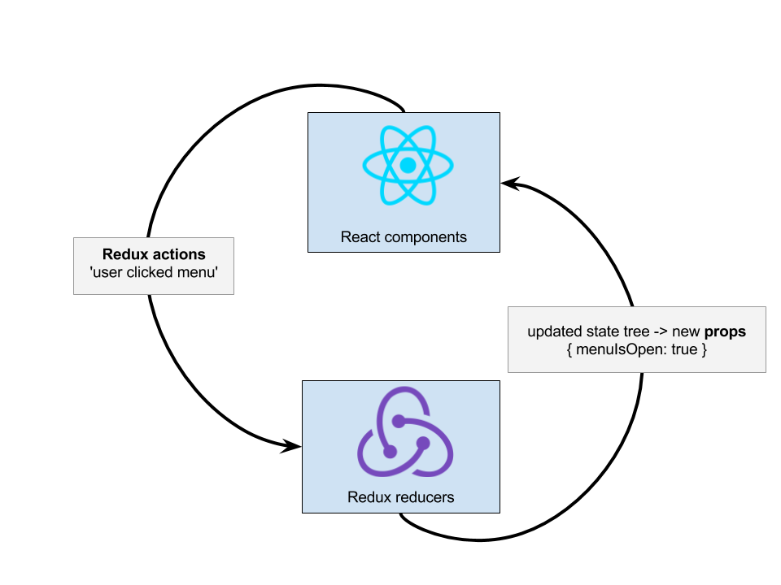

React + Redux
wifi: network
password: password
Early?
- any prep instructions
Welcome!
Girl Develop It is here to provide affordable and accessible programs to learn software through mentorship and hands-on instruction.
Some "rules"
- We are here for you!
- Every question is important
- Help each other
- Have fun
GDI Philly is now on Slack!
Slack is a free, chat and messaging system available as either a web or native application for your desktop or mobile device. Sign up here:
http://bit.ly/gdi-philly-slack
What we covered: Part 1
- React - what is it?
- Redux - what is it?
- Benefits of React
- ES6
- JSX
- Props
- State
What we will cover: Part 2
- Redux - what is it?
- State Tree
- The Redux Cycle
- Action Creators
- Reducers
- "Connected" Views
- "Dumb" Components
React - Review
Approaching Redux
- Don't worry about remembering every function name or implementation detail - copy and paste!
- Focus on following the 'flow' of developing a Redux app
- Work on small pieces at a time
Redux - What is it
Redux is a predictable state container for JavaScript apps.
More highly recommended resources for Redux:
Egghead.io - Dan Abramov, creator of Redux, explains in 2 hrsRedux - What is it
One-way data flow:
- components don't directly modify their state or other components' states:
- they simply tell the 'store' (the thing that manages application state) what change they want to make,
- and the store manages telling the views to update
Redux - What is it
Redux works well with React because React elements automatically know to re-render if one of their 'props' changes value.
Redux - What does it look like?
- Single data store describes entire application state (no individual 'models')
- In React files, event handlers describe user interactions
handleSubmitClick = e => {
this.props.submitButtonClicked();
};
render() {
}
A React/Redux project
└── src
├── App.js - "entry point" - injects the app into your webpage
├── api - requests to APIs for data go here
├── assets - images, fonts, styles
├── components - reusable components, agnostic of role in app,
with their styles
├── state - REDUX! Stores the app's entire state tree,
and updates the state tree in response to events
in the views
├── utils - miscellaneous functions for reuse throughout app
└── views - app-specific UI interfaces
A React/Redux project - details
├── api
│ ├── meetup.js
│ └── spotify.js
├── assets
│ ├── images
│ └── styles
├── state <- THIS IS WHERE REDUX COMES IN!
│ ├── actions
│ └── reducers
├── components
│ ├── event.js
│ ├── event.scss
│ ├── input.js
│ └── input.scss
├── views
├── app-header
└── login
└── utils
The Redux Cycle
The Redux Cycle
- React components dispatch 'actions' describing the user interaction
- Redux store listens for actions and returns an updated copy of the State Tree, based on data from actions
- React components listen for updates to their props and rerender if anything changes
Anatomy of a Redux Action
- A Redux action is a Javascript object
- It has one absolutely essential property: a type which is a descriptive string.
- It has optional properties - the most important one is data
someActions = [
{
type: "SPOTIFY_PLAYLIST_DATA_RECEIVED",
data: {
playlistName: "Snow Day Playlist",
genre: "RockNRoll",
}
},
{
type: "USER_LOGOUT_SUCCEEDED",
}
]
Dispatching Actions
views/login-form.js
handleLogoutClick = () => {
const { dispatch } = this.props;
dispatch({type: "USER_LOGGED_OUT"}),
}
Action Creators
- To access our actions and make our React components cleaner, create functions that return those actions, which can be called from the UI
- They allow us to pass different information to the actions as function arguments so that the actions are reusable.
- These functions are called action creators.
export function spotifyPlaylistDataReceived(playlist) {
return {
type: "SPOTIFY_PLAYLIST_DATA_RECEIVED",
data: {
playlistName: playlist.name,
genre: playlist.genre,
}
};
}
Redux cycle: Actions
React:views/login-form.js
handleLogoutClick = () => {
const { dispatch, userLoggedOut } = this.props;
dispatch(userLoggedOut());
}
state/actions/login-action-creators.js
// Meanwhile, in userActions.js
userLoggedOut = () => {
return {
type: "USER_LOGGED_OUT",
}
};
Redux cycle: Actions
React:views/todo-list.js
handleDeleteItem = () => {
const { itemDeleted, itemId, dispatch } = this.props;
dispatch(itemDeleted(itemId));
}
state/actions/todo-list-action-creators.js
// Meanwhile, in itemActions.js
itemLoggedOut = (itemId) => {
return {
type: "ITEM_DELETED",
data: { id: itemId },
};
};
Let's Develop It!
Think of an interaction you have with a web app
- Write the 'handler' part of it: what does the user do? (click, type, select)
- What does Redux need to know about this user action? (id of the item deleted, values of form fields, which menu item was selected, maybe nothing)
- How does this affect the state of the app?
One solution
UI component, handler, and action creator for clicking on a menu item
- The "handler" part: some JSX with an onClick handler for menu items
React component:
render() {
const { menuItems } = this.props;
return (
{menuItems.map(item -> (
{item.name}
)
)}
);
}
Action solution, continued
- Q: What does Redux need to know about this user action?
- A: Which menu item was clicked
handleMenuItemSelection = (item) => {
const { menuItemSelected, dispatch } = this.props;
dispatch(menuItemSelected(item));
}
Action solution, continued
- Redux: What kind of action gets dispatched?
// state/actions/menu-action-creators.js
menuItemSelected = (item) => {
type: "MENU_ITEM_SELECTED",
data: { item: item },
};
But what happens to those actions?
Reducers!
State tree
The state tree describes the state of the application
- This includes visual elements as well as data
Reducers: oldState + action = newState
Reducers
Reducers are functions that take state and an action and return a new state
function usersReducer(state = {}, action) {
switch (action.type) {
case 'LOGGED_IN':
return {
...state,
loggedIn: true
};
case 'LOGGED_OUT':
return {
...state,
loggedIn: false
};
default:
return state;
}
}
State Slices
- Each "slice" of state gets its own reducer, so your reducer functions don't have to navigate complex nested objects.
- Each slice has an
initialStatethat defines the structure for the state and what its initial values are. - Slices are discrete logical sections of your state - user, search, todos. You can break them up the way you want.
- Redux's combine-reducer function combines all the reducers into the "state tree".
Unpacking Reducers
- Reducers must be pure functions with no side effects
- The reducer function is what defines how the new state should look, but we can't actually modify the old state
- A reducer takes the old state object, and based on the action, returns a new state object
- Spread syntax makes a copy of the old state, and modifies that with the new properties
ES6 Spread Syntax again!
function lightSwitchReducer(oldState = {}, action) {
switch (action.type) {
case 'SWITCH_TOGGLED':
return {
...state,
lightIsOn: !state.lightIsOn,
};
}
}
Why can't we just do this?
function lightSwitchReducer(oldState = {}, action) {
switch (action.type) {
case 'SWITCH_TOGGLED':
state.lightIsOn = !state.lightIsOn;
return state;
}
}
Because we need pure functions: we can't modify state
Stretch break!

Redux-thunk: Actions with Side Effects
Side effects can be handled by Redux Action Creators
- API Calls
- Dispatch other actions
Redux-thunk: Actions with Side Effects
- Middleware
- Redux-thunk action creators can return a normal action OR a function
- The 'inner function' gets 2 parameters: the
dispatchfunction and agetStatefunction - That
getStateparameter is great because you can grab any part of the state tree!
Redux-thunk: Actions with Side effects
handleFetchPhotosForUser = () => {
const { photosFetchedForUser, username } = this.props;
photosFetchedForUser(username);
}
// Meanwhile, in actions/photos.js
photosFetchedForUser = (username) => {
return (dispatch, getState) => {
dispatch({
type: 'PHOTOS_REQUESTED_FOR_USER',
data: { username: username },
});
fetch(`/photos/${username}`).then(photos => {
dispatch({
type: 'PHOTO_REQUESTED_SUCCEEDED_FOR_USER',
data: { photos: photos, username: username },
});
}).catch(err => {
dispatch({
type: 'PHOTO_REQUEST_FAILED_FOR_USER',
data: { error: err, username: username }
});
});
};
};
Redux-thunk: Actions with Side Effects
What if username isn't used in your view anywhere? No need to pass it through as a prop - use getState!
handleFetchPhotosForUser = () => {
const { photosFetchedForUser } = this.props;
photosFetchedForUser();
}
// Meanwhile, in actions/photos.js
photosFetchedForUser = () => {
return (dispatch, getState) => {
const state = getState();
const username = state.user.username;
dispatch({
type: 'PHOTOS_REQUESTED_FOR_USER',
data: { username: username },
});
fetch(`/photos/${username}`).then(photos => {
dispatch({
type: 'PHOTO_REQUESTED_SUCCEEDED_FOR_USER',
data: { photos: photos, username: username },
});
})
};
};
Connected "Smart" Components
- Different parts of the app need different action creators as well as different parts of state
- Smart components are the React components that connect Redux action creators and state to your UI
- They are containers for styled, visible React components. They act as connectors between state and UI by passing action creators to their children.


Dumb components
- Dumb components are the visible components to your UI
- They get all of their props and functions from their smart parent components
- They have no knowledge of Redux or the state tree
Dumb components

Connecting a Smart Component to State
React-redux provides a function called 'connect'
ConnectedComponent = connect(mapStateToProps)(Component)mapStateToPropsis a function that you write for each smart component- It translates the state tree into props to pass to its children
mapStateToProps = (state) => {
isMenuOpen: state.menu.isOpen,
menuOptionSelected: state.menu.optionSelected,
menuOptions: state.menu.options,
formattedOptions: customFormattingFunction(state.menu.options),
};
mapStateToProps
- The props you give to a component should be the exact information it needs. Don't pass it entire state slices.
- Props should contain minimal nesting.
mapStateToProps = (state) => {
isMenuOpen: state.menu.isOpen,
menuOptionSelected: state.menu.optionSelected,
menuOptions: state.menu.options,
formattedOptions: customFormattingFunction(state.menu.options),
};
mapStateToProps = (state) => {
isMenuOpen: state.menu.isOpen,
menuOptionSelected: state.menu.optionSelected,
menuOptions: state.menu.options,
formattedOptions: customFormattingFunction(state.menu.options),
};
Connecting a Smart Component to Action Creators
- React-redux provides
bindActionCreators - Combines action creators with the
dispatchfunction var boundActions = bindActionCreators(actionCreators, dispatch)- The bound actions can be passed to "dumb" components as props
- The bound actions already know to dispatch the actions they create, so you don't have to tell them explicitly.
// App.js
import { Component } from 'react'
import { bindActionCreators } from 'redux'
import { connect } from 'react-redux'
import * as groceryActionCreators from '../state/actions/grocery-action-creators.js';
class GroceryListContainer extends Component {
render() {
// Injected by react-redux:
let { dispatch } = this.props
let boundActionCreators = bindActionCreators(groceryActionCreators, dispatch)
return (
class GroceryList extends Component {
handleItemClicked = () => {
const { item, removedGroceryItem } = this.props;
removedGroceryItem(item);
};
render() {
const { item } = this.props;
return (
{item.name}
)
}
}
BindActionCreators:
Troubleshooting hint
Smart components bind actions with the 'dispatch' function for their children. If you need to dispatch an action from a smart component, you need to use dispatch.
If your action creator function isn't being executed, check that the dispatch function is being called!
class GroceryListContainer extends Component {
componentWillMount() {
const { getGroceryItems, dispatch } = this.props;
dispatch(getGroceryItems());
}
render() {
// Injected by react-redux:
let { dispatch } = this.props
let boundActionCreators = bindActionCreators(groceryActionCreators, dispatch)
return (
<GroceryList {...boundActionCreators}/>
);
}
}
Adding a new feature or component
Break it down
- Write action creators that define possible interactions with this feature/component, and what data they require.
- Write the reducer to define what the "state slice" for this feature looks like, and how actions affect it.
- Hook it up to the Smart Component with
bindActionCreators - Your component will now receive the action creator actions as props.
Adding new features: Actions
You decide to add a "filter" to a table in your app - a box at the top that lets you filter the list by name
- Write the action creators for the feature
// filterActionCreators.js
export filterTextChanged = text => ({
type: "FILTER_TEXT_CHANGED",
data: { text: text },
});
export filterFocused = () => ({
type: "FILTER_FOCUSED",
});
export filterBlurred = () => ({
type: "FILTER_BLURRED",
});
Adding new features: Reducers
- Define the initial state for the new feature
// filterReducer.js
var initialState = {
hasFocus: false,
filterText: '',
};
Adding new features: Reducers
- Write the reducers for the function
// filterReducer.js
function filterReducer(previousState = initialState, action) {
switch (action.type) {
case 'FILTER_TEXT_CHANGED':
const { filterText } = action.data;
return {
...previousState,
filterText: filterText,
};
case 'FILTER_FOCUSED':
return {
...previousState,
hasFocus: true,
};
case 'FILTER_BLURRED':
return {
...previousState,
hasFocus: false,
};
default:
return previousState;
}
}
Adding new features: Connected component
// App.js
import { Component } from 'react'
import { bindActionCreators } from 'redux'
import { connect } from 'react-redux'
import * as filterActionCreators from '../state/actions/filter-action-creators.js';
class FilterContainer extends Component {
render() {
// Injected by react-redux:
let { dispatch } = this.props
let boundActionCreators = bindActionCreators(filterActionCreators, dispatch)
return (
Extra Credit: Selectors
Selector functions are like saved queries you can use to derive a specific piece of information from the state tree
Using the 'reselect' library gives us some advantages:
- Perform calculations/derivations from your raw data, so the state tree doesn't need to store them.
- Memoized by reference
- Can take other selector functions as arguments
Selectors
import { createSelector } from 'reselect'
function getUserLevel = (state) => state.user.account.level
function getMembershipTiers = (state) => state.membership.tiers
function userPaymentByTierSelector(userTier, tiers) {
return tiers[userTier] >= tiers.premier
}
export const userCanAccess = createSelector(
getUserLevel,
getMembershipTiers,
userPaymentByTierSelector
)
// meanwhile, in Payment.js component:
import { userCanAccessPremier } from './user-selectors';
mapStateToProps = (state) => {
username: state.user.name
userHasPremierAccess: userCanAccessPremier(state)
}
Let's Develop It
Let's use what we learned from Redux to write an app that grabs data from Meetup or iTunes and displays it.
- Use a copy of the
redux-app-duplicate-mein the repo for this class. The reducers are set up for you. - Components:
- a button to 'fetch' the items from the API,
- 'Event' or 'Playlist' or 'Song' tiles to display them.
- Actions:
- userRequestedFetch
- userFetchSucceeded
- userLIKEDitem
What next?
- Suggested class sequences
- Other upcoming GDI classes/events
- Write about your class experience, and send us a link! We can share to the Philly community, and maybe GDI national.
Get Involved
- Join Slack community
- Teaching assist
- Teach something
- Mentor or be mentored
Survey
We value your feedback and are always trying to improve.